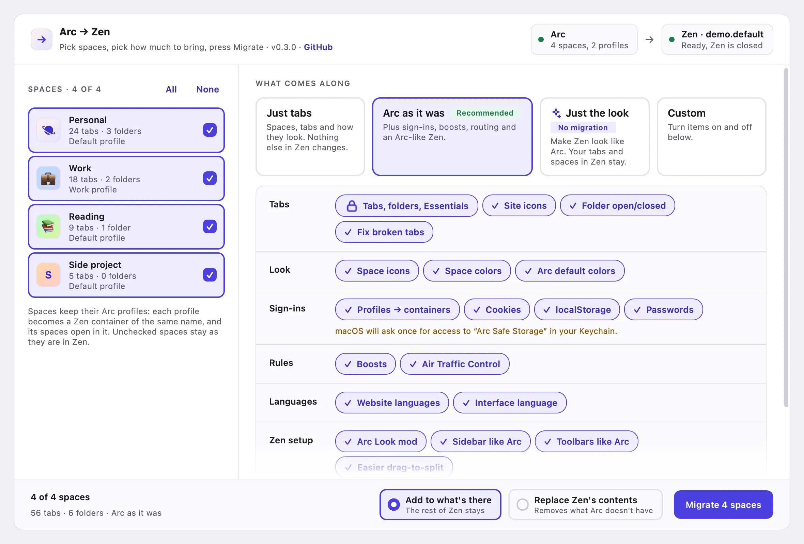
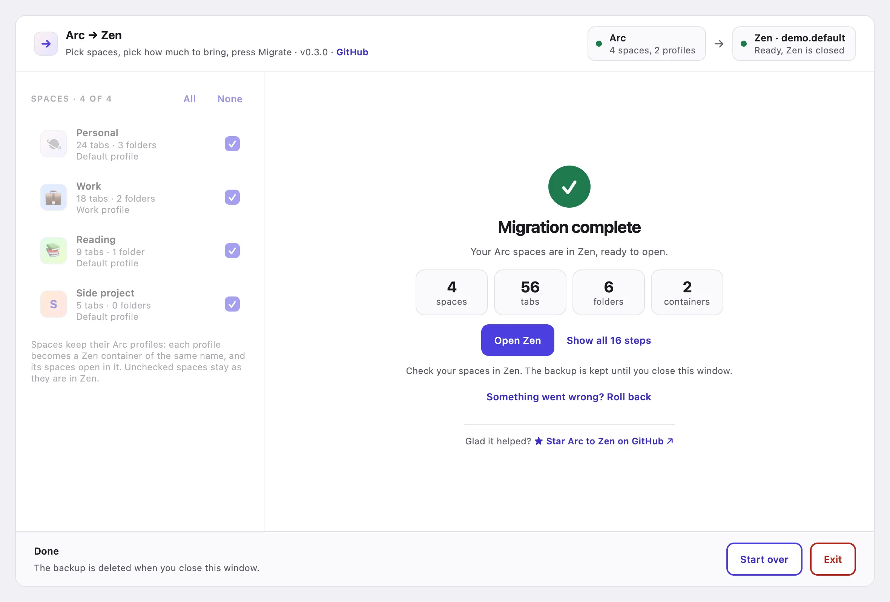

Arc Zen,
everything along.
Your spaces, pinned tabs and folders, sign-ins, boosts and settings move into Zen in one go. Or keep Zen as it is and give it Arc's look.

The parts of Arc you'd miss
Each item is a switch in the app, grouped the same way. Hover one to see what it does.
Tabs
Look
Sign-ins
Rules
Languages
Zen setup
Bring a little, or all of it
Just tabs
Spaces, tabs and how they look. Nothing else in Zen changes.
Arc as it was
Everything above: sign-ins, boosts, routing, languages and an Arc-like Zen.
Just the look
Zen keeps its tabs and spaces and gets Arc's look. Works without Arc installed.

Nothing you can't undo
Zen is backed up first
Before the first step, every time. One click puts Zen back exactly as it was, until you close the window.
Arc is only read
Arc's files are opened read-only and nothing in Arc changes. Cookies and passwords are decrypted in memory and never written out in plain text.
Download Arc to Zen
First start on macOS. The app isn't signed yet, so macOS blocks it once. Open System Settings, then Privacy & Security, and click Open Anyway next to Arc to Zen.
First start on Windows. If SmartScreen stops it, click More info, then Run anyway. Each release lists SHA256SUMS.txt to check the download.